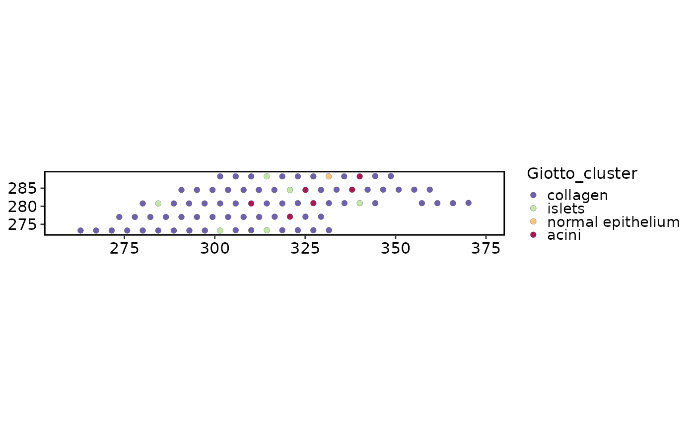

Add Giotto results back to Seurat
Usage
AddGiottoToSeurat(
srt,
x,
result = c("cluster", "hmrf"),
name = NULL,
tool_name = "Giotto",
store_result = TRUE
)Arguments
- srt
A Seurat object.
- x
A `giotto2` workflow object.
- result
Giotto result to copy back.
- name
Metadata column name to write. If `NULL`, a default name is used.
- tool_name
Name used to store the Giotto workflow object in `srt@tools`.
- store_result
Whether to store the Giotto workflow object in `srt@tools[[tool_name]]`.
Examples
data(visium_human_pancreas_sub)
spatial <- subset(
visium_human_pancreas_sub,
cells = colnames(visium_human_pancreas_sub)[1:80],
features = rownames(visium_human_pancreas_sub)[1:200]
)
#> Warning: Not validating Centroids objects
#> Warning: Not validating Centroids objects
#> Warning: Not validating FOV objects
#> Warning: Not validating FOV objects
#> Warning: Not validating FOV objects
#> Warning: Not validating FOV objects
#> Warning: Not validating FOV objects
#> Warning: Not validating FOV objects
#> Warning: Not validating Seurat objects
g <- structure(
list(
source = list(cells = colnames(spatial)),
results = list(
cluster = list(
table = data.frame(
cell = colnames(spatial),
cluster = spatial$coda_label,
row.names = colnames(spatial)
)
)
)
),
class = c("giotto2", "list")
)
spatial <- AddGiottoToSeurat(
spatial,
g,
result = "cluster",
name = "Giotto_cluster",
store_result = FALSE
)
SpatialSpotPlot(
spatial,
group.by = "Giotto_cluster",
plot_type = "point",
overlay_image = FALSE,
coord.cols = c("x", "y")
)
